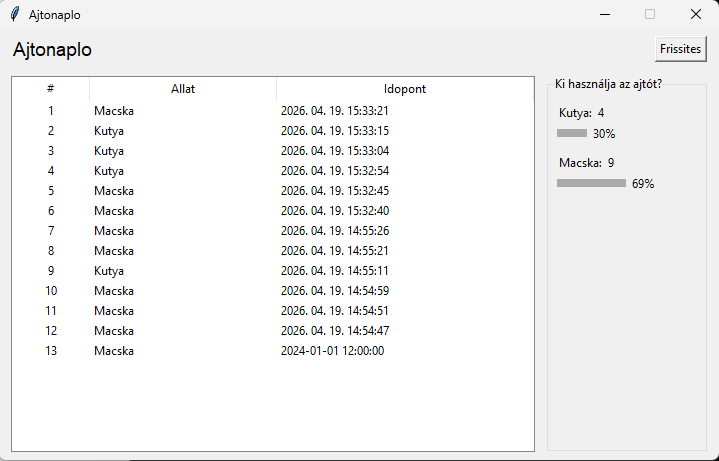

Tantárgy Áttekintése
A Programfejlesztés tantárgyat a 12. és 13. osztályban tanultam, ahol a Python programozási nyelvben elsajátítottam az alapvető szoftverfejlesztés technikáit.
Fő tanulási témakörök:
- Python alapok - Változók, adattípusok, ciklusok és feltételek
- Függvények (def)
- Class-ekkel programozás
- GUI fejlesztés - Tkinter könyvtár használata, új ablakban megnyíló adatbevitel
- Fájlkezelés - Szöveges dokumentumok írása és olvasása
- Adatbevitel feldolgozása - Felhasználói adatok kezelése és fájlokba való mentése
Projektek és Feladatok
Alapszintű Python Programozás
Az első fázisban az alapvető programozási koncepciókkal kezdtünk. Megtanultuk a for és while ciklokkal való munkát, if-elif-else feltételes utasításokkal dolgoztunk.
Függvények (def) Használata
Megtanultuk, hogyan lehet moduláris, karbantartható kódot írni a def kulcsszó segítségével. Írtunk olyan programokat, amelyek több függvényből állnak össze.
Klasszikus Programok (Multi-def struktúra)
Összetettebb projektek elkészítésekor több függvényt kellett egymásra építeni. Például egy szöveges alapú menükezelő program, amely különböző funkciókat biztosít a felhasználónak. Az ilyen programok tartalmazzák a felhasználói bemenetet, az adatok feldolgozását és az eredmények megjelenítését.
Objektumorientált Programozás - Classek
A 13. osztályban áttértünk az objektumorientált programozásra (OOP). Megtanultuk, hogyan lehet classeket (osztályokat) definiálni, amelyeknek attribútumaik és metódusaik vannak. Gyakoroltunk olyan feladatokat, mint egy "Személy" vagy "Autó" class létrehozása, amelyeknek különböző tulajdonságaik és metódusaik voltak.
GUI Fejlesztés - Tkinter
A grafikus felhasználói felület (GUI) fejlesztésére a Tkinter könyvtárat használtuk. Tanultunk egyszerű ablakokat, gombokat, szövegmezőket és más widgeteket létrehozni. A fontos feladat volt az új ablakban megnyíló adatbeviteli kódok alkalmazása, amely lehetővé tette, hogy a felhasználók egy külön ablakban adjanak meg adatokat az alapprogram zavaratlanul futhatott.
Szöveges Dokumentumba Adatok Írása
Nagyobb projektek részeként szerezni kellett azt a képességet, hogy a felhasználótól kapott adatokat szöveges fájlokba (.txt) mentsük. Az open(), write() és close() metódusokkal dolgoztunk. Készítettünk olyan programokat, amely befogadta a felhasználótól az adatokat (GUI-n keresztül vagy konzolon) és azokat azonnal elmentette egy szöveges dokumentumba.
Programozás Project
Év Végi Projekt: IoT Értesítési Rendszer Tkinter GUI-val
Ez az év végi projekt összeköti a Programfejlesztés és IoT tantárgyakat. A rendszer fogadja az IoT eszközről (kutya-macska ajtórendszer) érkező értesítéseket, és azokat egy Tkinter alapú grafikus felületen jeleníti meg. Emellett statisztikákat készít az eseményekről, például hogy hány macska vagy kutya haladt át az ajtón adott idő alatt.
Tkinter Grafikus Felület
A felhasználói felület lehetővé teszi az értesítések valós idejű megjelenítését. A program Python-ban íródott, Tkinter könyvtárral a GUI-hoz.
Tkinter Interfész Képernyőképe
A grafikus felület fő ablaka, ahol az értesítések és statisztikák megjelennek. A kép mutatja a felhasználói felület elrendezését és a valós idejű adatokat.

Pycharm Kód
Megjelenítés
import tkinter as tk
from tkinter import ttk
import urllib.request
import json
import threading
NODE_RED_URL = "http://192.168.8.141:1880/logs"
dog_count = 0
cat_count = 0
def find_val(row, *keys):
for k in keys:
for rk in row:
if rk.lower() == k.lower():
return row[rk]
return "?"
def fetch_logs():
btn_refresh.config(state="disabled")
def task():
try:
with urllib.request.urlopen(NODE_RED_URL, timeout=5) as r:
data = json.loads(r.read().decode())
root.after(0, lambda: populate(data))
except Exception as e:
err = str(e)
root.after(0, lambda: [btn_refresh.config(state="normal")])
threading.Thread(target=task, daemon=True).start()
def populate(data):
global dog_count, cat_count
tree.delete(*tree.get_children())
dog_count = 0
cat_count = 0
for i, row in enumerate(data, 1):
animal = find_val(row, "animal", "allat")
timestamp = find_val(row, "timestamp", "ido", "time")
display = "Kutya" if str(animal).lower() == "dog" else "Macska"
tree.insert("", "end", values=(i, display, timestamp))
if str(animal).lower() == "dog":
dog_count += 1
else:
cat_count += 1
update_stats()
btn_refresh.config(state="normal")
def update_stats():
total = dog_count + cat_count
dog_lbl.config(text=f"Kutya: {dog_count}")
cat_lbl.config(text=f"Macska: {cat_count}")
if total == 0:
bar_dog.config(width=0)
bar_cat.config(width=0)
pct_dog.config(text="")
pct_cat.config(text="")
return
bar_dog.config(width=int(100 * dog_count / total))
bar_cat.config(width=int(100 * cat_count / total))
pct_dog.config(text=f"{dog_count * 100 // total}%")
pct_cat.config(text=f"{cat_count * 100 // total}%")
# ablak
root = tk.Tk()
root.title("Ajtonaplo")
root.geometry("720x430")
root.resizable(0, 0)
# felso sav
top = tk.Frame(root)
top.pack(fill="x", padx=12, pady=6)
ttk.Label(top, text="Ajtonaplo", font=("TkDefaultFont", 14)).pack(side="left")
btn_refresh = tk.Button(top, text="Frissites", command=fetch_logs)
btn_refresh.pack(side="right")
# fő rész
main = tk.Frame(root)
main.pack(fill="both", expand=True, padx=12, pady=8)
# table bal oldai
cols = ("#", "Allat", "Idopont")
tree = ttk.Treeview(main, columns=cols, show="headings", height=15)
for col, w in zip(cols, (40, 150, 220)):
tree.heading(col, text=col)
tree.column(col, width=w, anchor="center" if col == "#" else "w")
tree.pack(side="left", fill="both", expand=True)
# statisztika panel jobb
stats = ttk.LabelFrame(main, text="Ki használja az ajtót?", width=160)
stats.pack(side="left", fill="y", padx=(12, 0))
stats.pack_propagate(False)
dog_lbl = ttk.Label(stats, text="Kutya: 0")
dog_lbl.pack(anchor="w", padx=8, pady=(10, 0))
dog_bar_frame = tk.Frame(stats)
dog_bar_frame.pack(anchor="w", padx=8, pady=(2, 10))
bar_dog = tk.Frame(dog_bar_frame, bg="#aaaaaa", height=8, width=0)
bar_dog.pack(side="left")
pct_dog = ttk.Label(dog_bar_frame, text="")
pct_dog.pack(side="left", padx=4)
cat_lbl = ttk.Label(stats, text="Macska: 0")
cat_lbl.pack(anchor="w", padx=8)
cat_bar_frame = tk.Frame(stats)
cat_bar_frame.pack(anchor="w", padx=8, pady=(2, 10))
bar_cat = tk.Frame(cat_bar_frame, bg="#aaaaaa", height=8, width=0)
bar_cat.pack(side="left")
pct_cat = ttk.Label(cat_bar_frame, text="")
pct_cat.pack(side="left", padx=4)
fetch_logs()
root.mainloop()